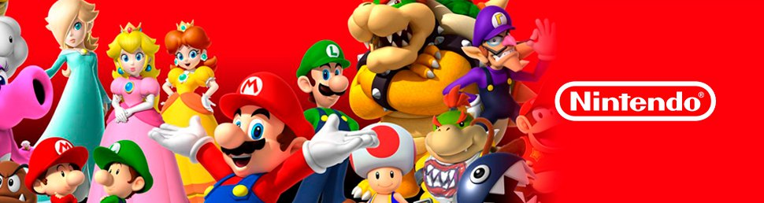

El jugador controla a Link, que despierta en un mundo postapocalíptico después de estar cien años durmiendo para derrotar a Ganon y salvar al reino de Hyrule.
La característica principal en este juego es la habilidad de portar a Cappy, este hace que Mario pueda poseer enemigos u objetos para usar sus habilidades para resolver rompecabezas y hacerte paso dentro del juego.
El personaje jugable recibe el nombre y el género a elección al inicio de la partida, y su apariencia se puede modificar comprando o diseñando ropa y accesorios personalizados o cambiando el peinado.